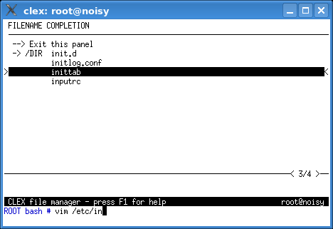

This function attempts to complete any name (word) found at the cursor position. TIP: If finer control over the name completion is required or if the automatic completion reaches its limits, please use the: completion/insertion panel (<esc> <tab>) instead.
There are several types of name completion and the completion method is chosen automatically depending on the context. Please note that inside some command line constructs (e.g. loops), the automatic completion may fail to choose the right type of completion.
$PATH is searched.
~
(~username = user's home directory)
$ signFilename completion tries to recognize certain shell metacharacters and completes filenames in these situations:
command < /some/file - also > or >> redirectionscommand ; /other/commandcommand & /other/commandcommand || /other/command - also &&command | /other/command`command`arg=/some/file--option=/some/filehost:/some/file or user@host:/some/filearg, option, user, or host in these
examples must be a single word and the cursor must be positioned after
the : or = character.
If there is no completion possibility, a warning is displayed. If there is exactly one completion possibility, CLEX completes the name, otherwise a list of completion candidates appears on the screen.
